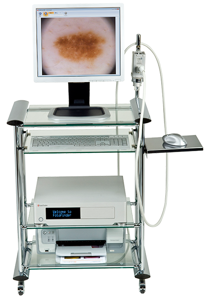
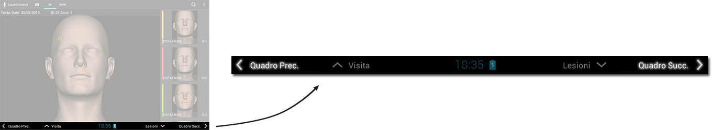
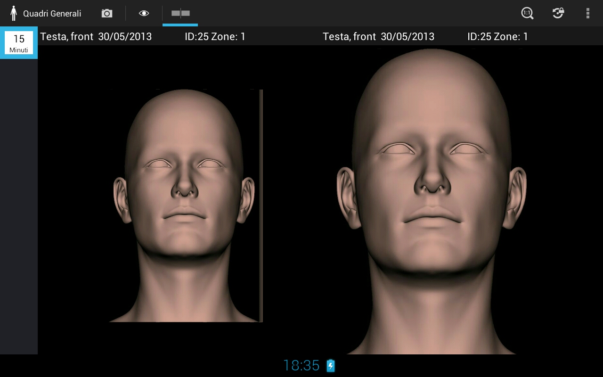
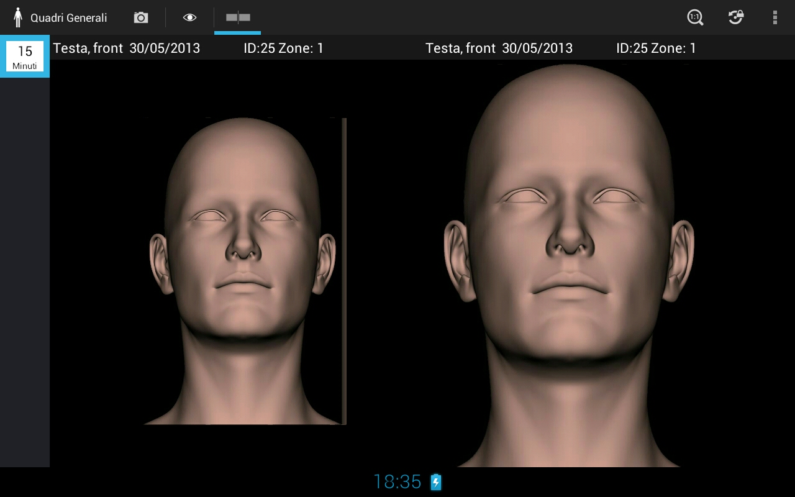
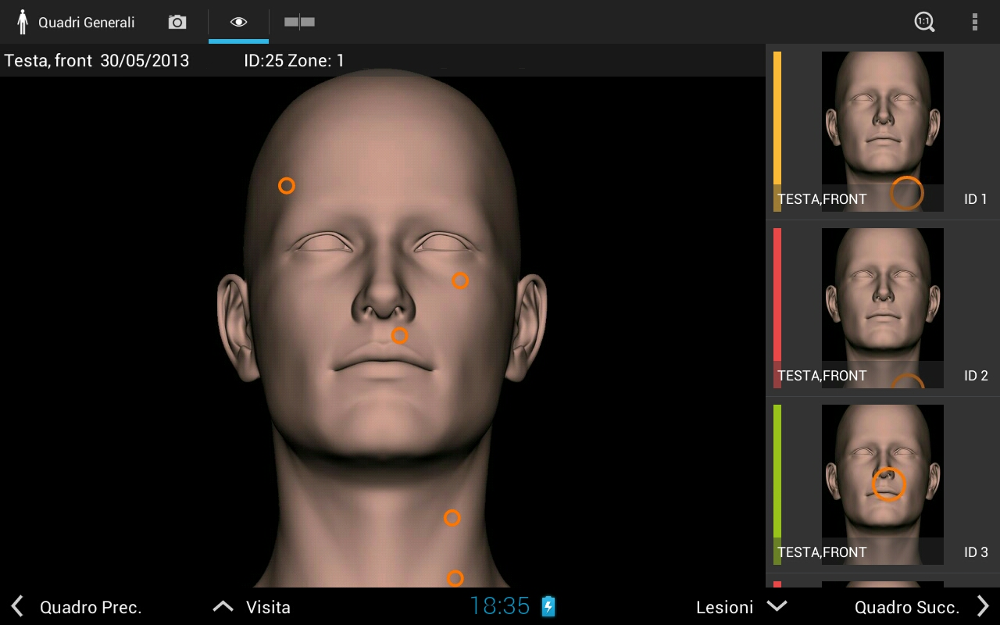
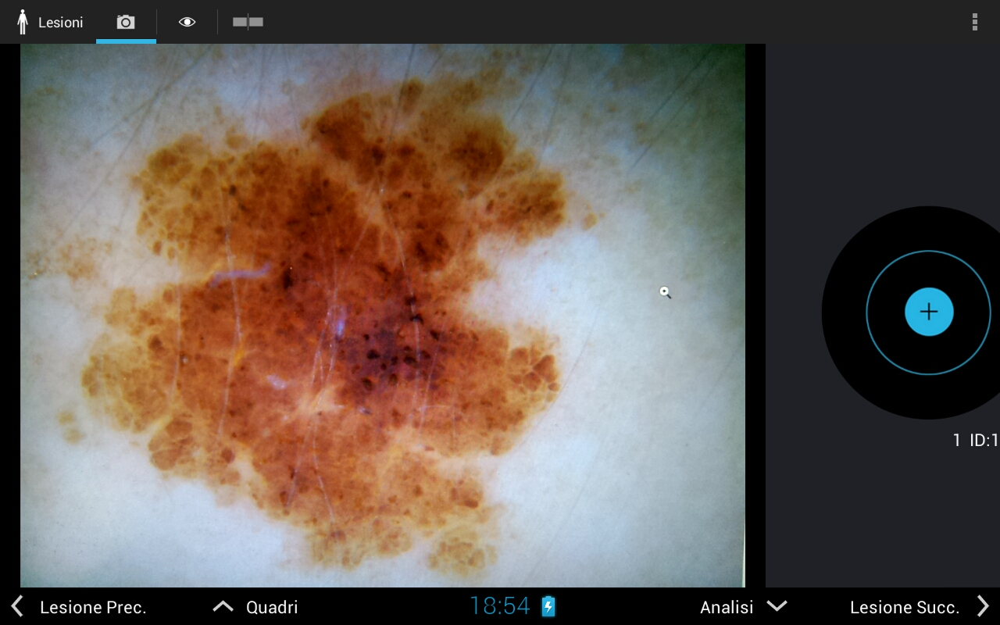
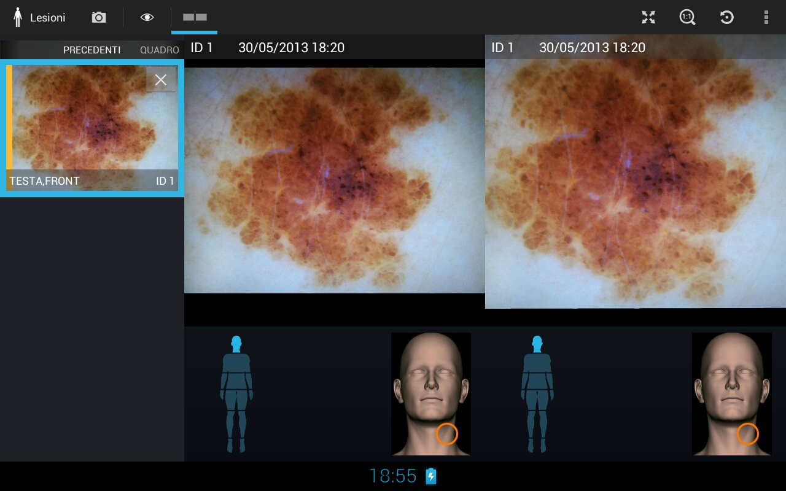
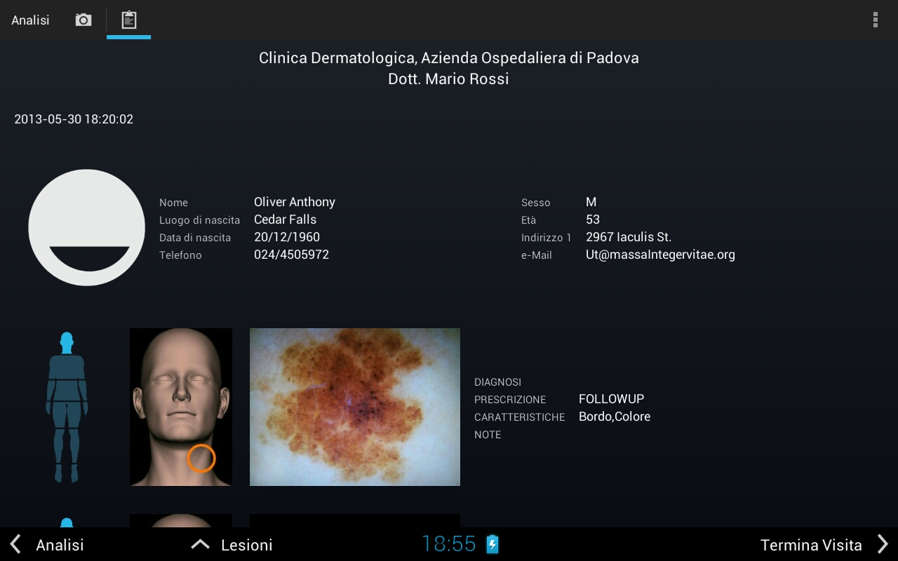
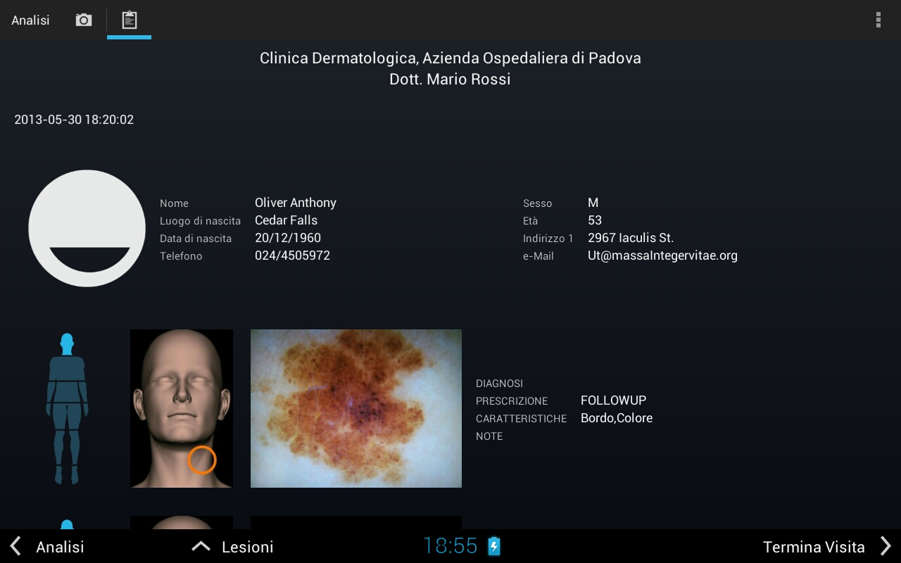

MoleMapper
- uno strumento per mappature efficienti
- pratico
- vs 
Quadri generali
- MoleMapper è pensato per mappature complete
- Per permettere la cooperazione fra medici, si è individuato un set di quadri generali standard
- La standardizzazione permette una più facile e rapida analisi dello storico di un paziente
Struttura della visita
Abbiamo individuato 9 passi raggruppati in 4 fasi
- anagrafica (visite precedenti)
- foto quadri generali
- confronto con le foto precedenti
- marcatura lesioni sui quadri generali
- foto dermatoscopiche
- confronto con storico
- diagnosi lesioni
- riepilogo
- referto
- pazienti
- quadri
- lesioni
- analisi
Navigazione
- all'interno di una fase ci si muove ciclicamente avanti-indietro
 - per spostarsi fra fasi si usano i pulsanti di cambio sezione

Struttura dell'applicazione
Pazienti

Struttura dell'applicazione
Quadri
 

Struttura dell'applicazione
Lesioni
 

Struttura dell'applicazione
Analisi
 
 Dimostrazione
Simulazione di una visita
Cambiamenti previsti
- lente dermatoscopica più piccola e leggera
- modello diverso di tablet (anche come dimensioni)
- fotocamera di qualità migliore
- schermo con risoluzione maggiore
- gestione utenti dell'applicazione
- gestione dell'agenda appuntamenti
- struttura dell'applicazione modificabile
- anagrafica e referto modificabili
- quadri personalizzabili
- esportazione di referto e foto
Come si svolgeranno gli esperimenti
- noi come pazienti (3 medici, 3 pazienti):
- 1 medico fa 3 visite ad 1 paziente
- 1 medico fa 3+2+1 visite ai 3 pazienti
- 1 medico fa 4+2 visite a 2 pazienti
- intervista individuale
- ...modifiche->iterazione...
- pazienti veri
- intervista individuale
- questionario di valutazione
Troubleshooting
- non trovo i nei della volta precedente
- overlap
- cancellazione
- remap
- non voglio fare una foto
- foto dopo aver marcato
- visita chiusa
- crash
- freeze
- if all else fails..
Dubbi? Domande? Perplessità?
Dubbi? Domande? Perplessità?
<Grazie>
melanoma@dei.unipd.it